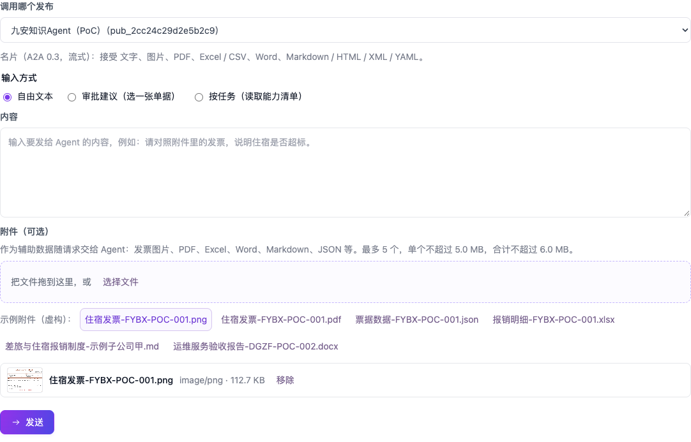

1. 日常运维
1.1 每天看什么
| 看什么 | 怎么看 | 正常的样子 |
|---|---|---|
| 站点是否在线 | curl - |
HTTP 200，status 为 ok（刚重启的几秒是
starting） |
| 九安 v0.7.10 测试台 | curl -；页面上看单据池里有没有新的
AI 建议（第 2.9 节） |
HTTP 200 |
| MySQL 容器 | 经 SSM：docker ps（jiuan- 是
Up）；健康检查 /
每次都问一次库（SELECT 1，3 秒超时），database
是 ok、source 是
poc- |
容器 Up；database: ok。库断了健康检查回
503，database 是 unavailable |
| 服务日志 | 第 1.2 节 | 有
andon-；没有成串的
APP_ / APPROVAL_ |
| 审批流能不能出建议 | 单据池顶上点一次「模拟来单」，看新卡片上出现「AI 初审：…」和「待人工复核」 | 健康检查看不出这一点：调用密钥失效、Nexus 出错时它照样是 200（评审 I6，交接文档第 6.1 节） |
| Nexus 费用 | Nexus 网页上发布者名下的用量 | 每次 Agent 调用约 0.05 美元；读能力清单约 0.03 美元；验证调用密钥不花钱 |
| AWS 费用 | 账单 | t3.large 约 61 美元 / 月（2026-10-19 前是 t3.small，约 15 美元），16 GB gp3 根卷约 1.3 美元 / 月，公网 IPv4 约 3.6 美元 / 月；升级前的快照不到 1 美元 / 月 |
1.2 看日志
线上 PoC（栈 andon-finance-poc）不开 22 端口，只走
SSM：
aws ssm start-session --region us-east-1 --target i-01d753d48056fd423
sudo journalctl -u andon-finance-poc -n 200 --no-pager # 服务日志
sudo tail -n 200 /var/log/cloud-init-output.log # 首次启动的初始化日志经 SSH 管理的栈（如 m7g 测试环境 andon-finance-m7g）不用
SSM：22 端口只对环境配置里的 SSH_ALLOWED_CIDR 开，用
SSH_KEY_FILE 以 ec2-user
登录，主机公钥用部署时钉住的那份（poc/infra/README.md「经
SSH 管理」）：
ssh -i <SSH_KEY_FILE> -o UserKnownHostsFile=poc/infra/.state/<栈>-<实例>.known_hosts ec2-user@<栈输出 ElasticIp>
# SSH_VIA=eice（m7g 测试环境是这样）：经 EC2 Instance Connect 端点，再加
# -o ProxyCommand='aws ec2-instance-connect open-tunnel --region us-east-1 --instance-id <实例>'
sudo journalctl -u andon-jiuan07 -n 200 --no-pager # 九安 v0.7.10 测试台外壳的日志直连时本机的公网地址变了就连不上：改环境配置里的
SSH_ALLOWED_CIDR，再跑一次
deploy.sh（更新栈）；经端点（SSH_VIA=eice）不看本机地址，要的是
AWS 凭证有 ec2-instance-connect:OpenTunnel。
日志里只有错误码，没有口令、密钥和单据内容。主要几种：
| 日志 | 意思 |
|---|---|
andon- |
服务起来了 |
APP_ |
九安服务端或 PoC 插件里的错误（含预热失败
POC_） |
APPROVAL_ |
审批流后台执行出错（预审或审批建议） |
SAMPLES_ |
示例附件不合规（代码问题；调用测试照常可用，只是没有示例附件） |
release download failed; keeping the current release |
启动时从构件桶拉包失败，继续用当前版本 |
andon- |
测试台：服务起来了，在等 MySQL；这期间健康检查回 503 starting |
BENCH_ |
还连不上 MySQL（第一次和之后每 15 次记一行）；服务不会退出，一直等 |
PLATFORM_ |
九安流水线运行器的错误 |
1.3 重启与健康检查
aws ssm send-command --region us-east-1 --instance-ids i-01d753d48056fd423 --document-name AWS-RunShellScript \
--parameters 'commands=["systemctl restart andon-finance-poc.service","sleep 5","systemctl is-active andon-finance-poc.service"]'
curl -fsS https://andon-finance.tinyboat.blog/api/health重启会：
- 先从构件桶重新拉
releases/current.tgz和secrets/secrets.env； - 测试台：先回 503 starting，等 MySQL 连上（一直等，不退出），迁移、写种子（写两遍等于写一遍），再正常服务；
- 单据和模拟来单在 MySQL 里，重启不丢；清空内存里的审批记录、登录状态和运行记录；
- 各账号的连接与启用都在磁盘上，不受影响。
2. 操作手册
2.1 接入一个新 Agent（固定的四步使用逻辑）

两个 Skill 怎么装、怎么连见 Skills 配置指南。
构建与发布（Agent 开发，用 Claude Code / Codex / Kiro CLI + nexus-ai-operator Skill）：建 Agent、写提示词、在平台内试用、建发布并打开 A2A。
签发调用密钥（发布者本人，Nexus 网页「互联中心 › 对外发布」）。Operator 和 API 密钥都签不了，这是平台的限制。
启用（使用者自己）：
- 页面：Agent 页 › 我的 Agent › 待启用 › 启用，粘贴调用密钥；
- 命令行：
python3 skills/agent-access/scripts/agent_access.py enable <发布编号> --key-stdin --yes（密钥从标准输入读）。
应用当场验证（读名片 +
tasks/get，不花钱），默认顺便读一次能力清单。调用测试、再迭代：在调用测试里按任务调用；改提示词后在 Nexus 上更新 Agent（发布跟随最新版本），回到页面点「重新读能力清单」。
不需要改 secrets.env，不需要部署，不需要重启。

2.2 审批流用哪把调用密钥
审批流的调用密钥从系统里读，不用另外配：
- 先用发起（或重试）这张单据审批的人，在 Agent 页启用的「九安审核AI」那把；
- 他没启用，就用别的账号启用的、最近验证过的那把；
- 都没有，审批停在「AI 初审失败」，错误码
AI_AUTH_INVALID：在 Agent 页启用「九安审核AI」后点「重试 AI」。不要往secrets.env里放调用密钥。
Nexus 回 401 时，只把用到的那一把标记为「密钥失效」，下一次自动换下一把。要换密钥：在 Agent 页那张卡片上点「换密钥」，粘贴新的；不用改文件，不用部署。
开发测试阶段，给出的密钥一直用到过期，不主动吊销、不轮换。
2.3 换口令或
REGISTRY_KEY
- 口令：改
secrets.env里的REVIEWER_PASSWORD/CHECKER_PASSWORD，再deploy.sh --code-only。 REGISTRY_KEY：只在怀疑泄露时换。换了以后，所有账号已保存的调用密钥都解不开，页面上会显示「密钥失效」，每个人都要重新粘贴启用。步骤：- 先通知所有在用的人；
- 删掉
secrets.env里这一行； - 运行
deploy.sh --code-only，脚本会生成新的一把； - 通知大家重新启用。
2.4 某个账号连不上或启用失败
先看页面上的提示或命令行的退出码：
| 退出码 / 错误码 | 原因 | 处理 |
|---|---|---|
3 / POC_ |
这个账号还没连接 Nexus，或连接在 Nexus 上被停用了 | 用自己的 API 密钥重新连接 |
4 / POC_ |
API 密钥无效或已经用过（第一次连接后平台会换新） | 在 Nexus「个人设置 › API 密钥」新建一把再连接 |
4 / POC_ |
调用密钥无效、被吊销，或不属于这个发布 | 签一把新的，「换密钥」 |
5 / POC_ |
这个发布不在这个人的 Nexus 列表里 | 确认用的是发布者本人或被分享者的 API 密钥 |
6 / POC_ |
发布暂停了，或 A2A 没打开 | 在 Nexus 上恢复发布、打开 A2A |
6 / POC_ |
还没启用，或刚被停用 | 先启用 |
7 / POC_ |
每个账号连接与启用每分钟最多 5 次 | 等一分钟 |
8 / POC_ |
暂时连不上 Nexus | 点「刷新」重试；不要因此去换新的 API 密钥，连接还在 |
2.5 审批流出不来建议

| 现象 | 原因 | 处理 |
|---|---|---|
状态停在「AI 初审失败」（系统已自动重试过一次），错误码
AI_ |
系统里找不到能用的调用密钥：没有人启用「九安审核AI」，或启用的那把过期了 | 在 Agent 页启用或「换密钥」（第 2.2 节），再「重试 AI」 |
AI_ |
Nexus 超时（单次最长 5 分钟）、5xx，或预算用完 | 看 Nexus 状态和预算；稍后点「重试 AI」，或「转人工」（不带 Agent 建议） |
AI_ |
Nexus 限流 | 稍后重试 |
AI_ |
请求不合规（附件超限、内容残缺） | 看运行记录里的 detail |
| 校验失败 | Agent 的输出没通过九安自己的校验 | 看运行记录里的原始返回；多半要改审批 Agent 的提示词 |
运行记录（Agent 页最下面）最多保留 50 条、重启清空，每条带错误码、用时和原始返回。
2.6 实例被替换之后
实例被替换（重建栈、换 AMI、实例故障）后：
- 代码和密钥会在第一次启动时自动从构件桶装上；
- 各账号的数据（
/var/lib/andon-finance/users/）会丢：每个人要重新连接、重新启用； - 旧的共享 CLI 连接目录
/var/lib/andon-finance/nexus/也会重新建（空的）； - 测试台的 MySQL
数据（
/var/lib/jiuan-mysql）也会丢；新实例上还没有bench.env，服务先按内存存储起来。再跑一次deploy.sh --code-only，它会装好 MySQL、写测试台密钥文件、切回 MySQL，启动时重新迁移、写种子。secrets.env里的BENCH_DATA_KEY不变就行。
替换前先跑 poc/infra/backup.sh：根卷快照 +
在实例上打包账号目录（里面的调用密钥是加密的，REGISTRY_KEY
不变就能解开）。要放回账号目录时，属主 andon:andon，目录
0700、文件 0600；要整盘恢复，用快照建卷。换实例类型用
upgrade-instance.sh，它只允许停机再开，不替换实例。
2.7 测试台：MySQL 的检查、重置、备份
- 检查：经 SSM 运行
docker ps和docker exec jiuan-mysql sh -c 'MYSQL_PWD="$(cat /run/bench-secrets/mysql_root_password)" mysqladmin ping -uroot'。 - 重置（端到端测试会自动做）：
/opt/andon-finance/current/bench/bench-reset.sh：停服务，删掉并重建jiuan_analysis，再开服务（启动时迁移、写种子）。不碰各账号的数据。 - 跑要 MySQL 的单元测试：本机运行
poc/infra/bench-test.sh，测试在实例上跑，只用jiuan_bench_test这个库。 - 升级前备份：
poc/infra/backup.sh（根卷快照 + 实例上打包账号目录）。 - 换实例类型：
poc/infra/upgrade-instance.sh <类型>：只允许停机再开；变更集里实例会被替换就不执行。 - 回到内存存储：
POC_STORE=memory poc/infra/deploy.sh --code-only。内存模式不碰 MySQL，所以 MySQL 坏了也能用它退回来。 - 测试台密钥只认原值：实例上已有的三项测试台密钥（
/etc/andon-finance/bench/）和secrets.env里的不一样时，部署在重启之前就失败，服务照旧跑。多半是secrets.env被重新生成了：找回交接的那份。真要换值，先有意重建测试台（删容器和/var/lib/jiuan-mysql、删/etc/andon-finance/bench/下的文件，再部署）；库里的数据会全部重建。
2.8 销毁
audit-nexus/poc/infra/destroy.sh # 要求输入栈名确认销毁前确认：构件桶里没有要留的东西；Nexus 上的调用密钥、API 密钥已停用。
2.9 九安 v0.7.10 测试台（jiuan-v0710）
同一台实例上的 systemd 服务 andon-jiuan07，部署、回滚和
PoC 共用一个构件（部署与迭代规范第
6.1 节）。现在只用
deploy.sh --code-only，不从本仓库跑知识库的 db
阶段（部署与迭代规范第 1
节末尾）。
看日志：sudo journalctl -u andon-jiuan07 -n 200 --no-pager。日志只记错误码和计数，不记回复、制度内容和密钥。要认得的几行：
| 日志 | 意思 | 要不要管 |
|---|---|---|
POC_ |
知识库 Agent 在 JSON 前面多写了一句话（不超过 200 字、不含
{ }），外壳照样收下了 |
偶尔有不用管；每次都有，就去看知识库 Agent 的提示词 |
POC_ |
发起人的「我的规则」太长，这一轮从末尾去掉了几页原件 | 告诉这个人删减规则 |
POC_ |
知识库 Agent 说的后端和部署配置的知识库方式对不上 | 核对「Agent 接入」页启用的是哪个知识库 Agent |
「我的规则」的两个错误码在页面上：上传时单个文件转出的文字就超过九安一次请求的上限（87,442
字）回
CUSTOM_RULES_UNSENDABLE；发起一轮时规则加单据放不进一次请求，这一轮在发给
Nexus 之前就失败，回 CUSTOM_RULES_TOO_LONG。知识库 Agent
的回复不合格式是 KB_AGENT_REPLY_INVALID（不重试）。
一轮 AI 建议慢、超时：一轮的上限是 180 秒，超时报
AI_UNAVAILABLE；正常是 7–20 秒。先在「Agent
接入」页的调用记录里看用时和错误码；再到 Nexus 上看这一轮的 A2A 会话，查
Agent
到底查了几次库、每次查什么、哪一步慢。会话存在发布者名下，用发布者的账号经
nexus-ai-operator 只读查：
python3 skills/nexus-ai-operator/scripts/nexus.py call GET /api/v2/me/sessions --raw # 找到这一轮的会话
python3 skills/nexus-ai-operator/scripts/nexus.py call GET /api/v2/sessions/<会话编号>/messages --raw2026-11-01
就是这样查到的：提示词还要求定审批路径，可知识库里没有审批矩阵的行，Agent
一轮查 11–16 次（SQL
本身很快）。看记录时注意两点：同一张单一模一样地重发，会落进同一段对话、回得很快，量时长要换一张单；大多数第一次调用会碰到
Bedrock 的 ValidationException（回放
reasoningContent），九安的重试会接住，它不是慢的原因。
改审核 Agent 的提示词：按部署与迭代规范第 6.3 节，每次改线上都在
audit-agent/prompt-history/ 留底。
知识库：测试台经 A2A 调 PG 知识库
Agent（pub_6ea5f0855dff6c1b，调用密钥在「Agent
接入」页启用）；知识库 Agent
的密钥失效时，知识库页的操作都会失败，在「Agent
接入」页换钥匙。部署、核对 PG 本身见 kb/GUIDE.md。
3. 后续迭代的最佳方式
3.1 固定的四步使用逻辑
一切设计都按这条走，这条不会变：
- 构建：开发者用 Claude Code / Codex / Kiro CLI + Operator Skill 在 Nexus 上建 Agent、发布、拿调用密钥。
- 发现与加载：前端经 A2A 自动发现（名片、能力清单），在 Agent 页上启用、调用测试。
- 按业务迭代：用 vibe coding 优化前端的调用方式和界面。
- 测试、上线：单元测试 + 端到端测试 + 项目负责人确认。
知识和 Agent 在一起（在 Nexus 上）；前端只做调用，不在应用里另建知识库。
3.2 一次迭代怎么走
| 步骤 | 做什么 | 产出 |
|---|---|---|
| 1 需求 | 写清楚要什么、给谁用、怎么算做成 | 一段需求说明 |
| 2 设计 | 改接口、改数据、改流程的，写设计文档并评审；小改动在合并请求里写清楚 | 设计文档（放在开发仓库） |
| 3 计划 | 拆成小任务，每个任务带测试 | 实现计划（放在开发仓库） |
| 4 实现 | 先写会失败的测试，再写实现 | 代码 + 测试 |
| 5 评审 | 整体评审一次，Critical / Important 当场修 | 评审记录 |
| 6 部署与验证 | 按部署与迭代规范第 5 节 | 端到端测试结果、截图 |
| 7 确认与记录 | 项目负责人确认；写 CHANGELOG.；更新文档并生成
HTML |
标签 poc- |
用编码工具（Claude Code、Codex、Kiro CLI）的时候，把这份文档和开发者工作流交给它；写操作一律要人确认后才加
--yes，密钥只经标准输入。
3.3 改 Agent 时
- 提示词放在仓库里（
knowledge-agent/prompt.yaml），每次改都把返回里的version加一，能力清单（describe）同步更新；旧版本另存一份（如prompt-v1.yaml）。 - 先在 Nexus 上试用，再用调用测试面板按任务调一次，最后跑相关的端到端测试。
- 任务约定只增不改：新任务可以加，已有任务的输入输出不改含义；要改就加新任务名。
3.4 改应用时
- 新接口加在 PoC
插件里（
/api/analysis/v1/poc/*），不改九安原接口。 - 九安页面上的改动只加锚点补丁；能放进独立文件（
nexus-poc.js这类）的就不放进补丁。 - 涉及密钥的代码：返回里只出现指纹；日志只记错误码；测试里检查输出没有密钥。
- 每个账号的数据只经
access/store.mjs读写；跨账号的东西（名片缓存）不能带任何账号的信息。
4. 下一步要建的运维能力
按优先级：
- 代码进 Git，构件包名和健康检查带上提交号（评审 C1；部署与迭代规范第 2 节）。
- 源站走 HTTPS 并加源站校验头（评审 C2）。
- 可观测性：每个请求、每次 Nexus 调用一行 JSON
日志（不含密钥），送 CloudWatch；定时用
tasks/get（不花钱）探测审批流会用到的那把调用密钥，结果放进健康检查；健康、5xx 比例、AI_AUTH_INVALID比例设告警（评审 I6）。 - 回滚可靠（评审 I2）。部署能看出安装失败（I1）已在 2026-10-19 修好。
- 主机打补丁：SSM Patch Manager 或定时
dnf upgrade（评审 I11）。 - 各账号数据的定时备份：
backup.sh现在要手动跑；改成定时，并把打包文件放到构件桶。 - 预发环境：同一模板另建一个栈，并入九安之前先在那里验证（评审 I10）。
- 调用量与费用看板：按账号、按发布统计调用次数（运行记录现在只在内存里）。
编号对应交接文档第 6.1 节「上生产前必须改的」。